Mental health belongs in every youth sport program.
Youth sport reaches more than 27 million young people a year, yet there is no national standard for the quality of that experience. These seven guidelines — developed in conjunction with the top experts in youth sport and mental health in the country, using an evidence-based protocol — define what a psychologically healthy program looks like, and how to enhance the sport experience for young people.
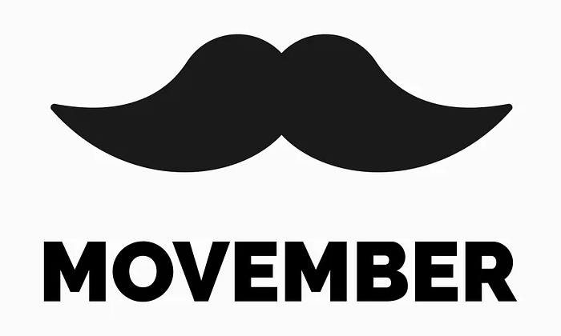
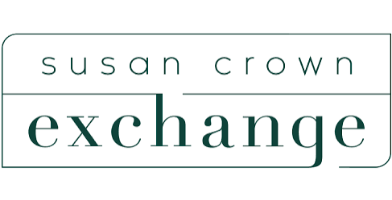
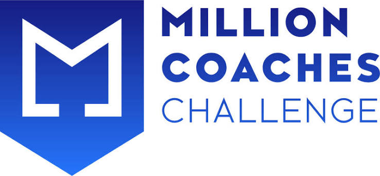
The seven guidelines
What a psychologically healthy program does
Each guideline pairs a plain-language standard with the evidence behind it and an implementation protocol. Start with a foundational level across all seven, then go deeper.
How to use this
Implementation is a continuum
No program is expected to do everything at once. The recommended approach is to reach a foundational level across all seven guidelines first, then progressively deepen. Most organizations will find they are already strong in some areas — start by finding those.
Foundational
The entry point. The basic protection or plan that should exist before a season starts.
Developing
No longer a one-off. Responsibility is named, training happens, the work repeats reliably.
Established
Embedded in the annual cycle — audited, surveyed or rehearsed on a schedule.
Advanced
Shapes how the organization runs: evaluation, hiring, referrals and operations reflect it.
Long-term sustainability
Survives staff turnover and keeps improving. A model others can learn from.
Guidelines were created by experts across youth sport and mental health
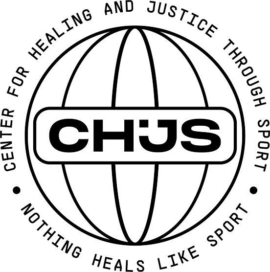
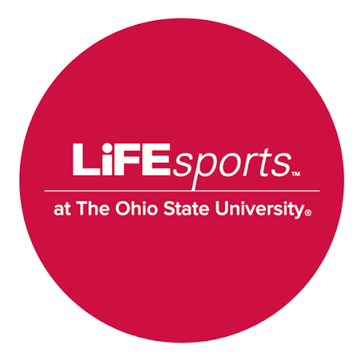

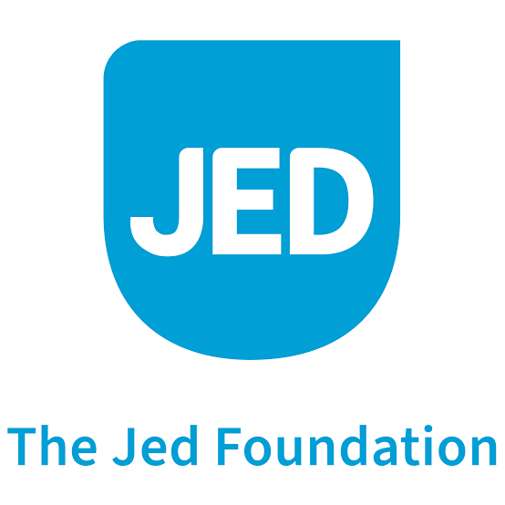
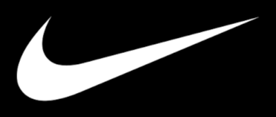
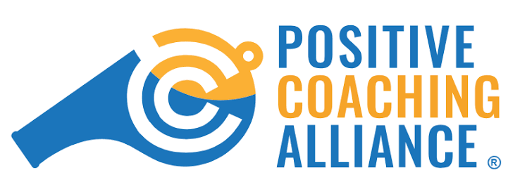
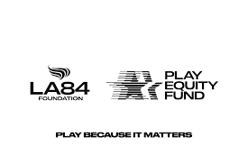
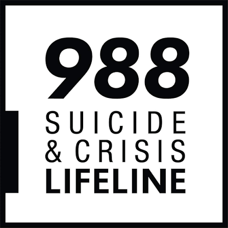
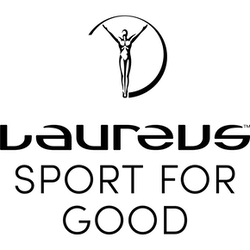
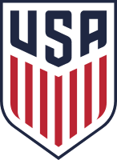
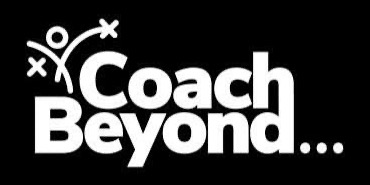
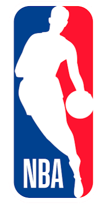
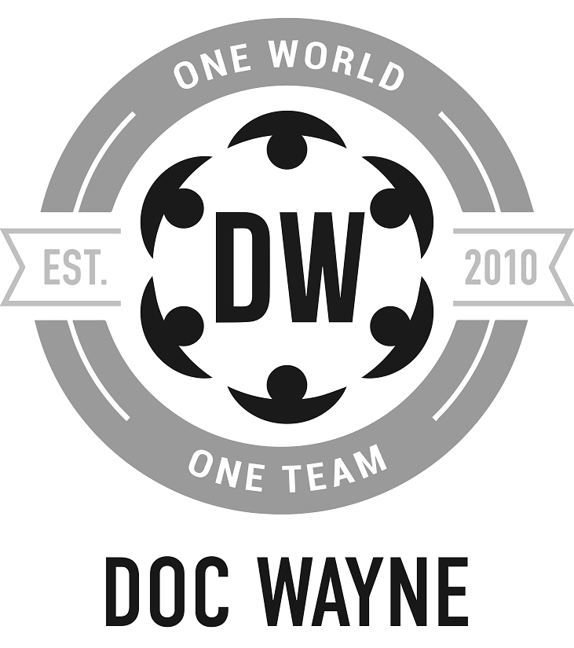
If someone needs help right now
Immediate support
These lines are free, confidential and available 24/7. If there is immediate danger to life, call 911.
- 988 Suicide & Crisis Lifeline
Call or text 988 - Crisis Text Line
Text HOME to 741741 - Trevor Project (LGBTQ+ youth)
1-866-488-7386 - SAMHSA National Helpline
1-800-662-4357